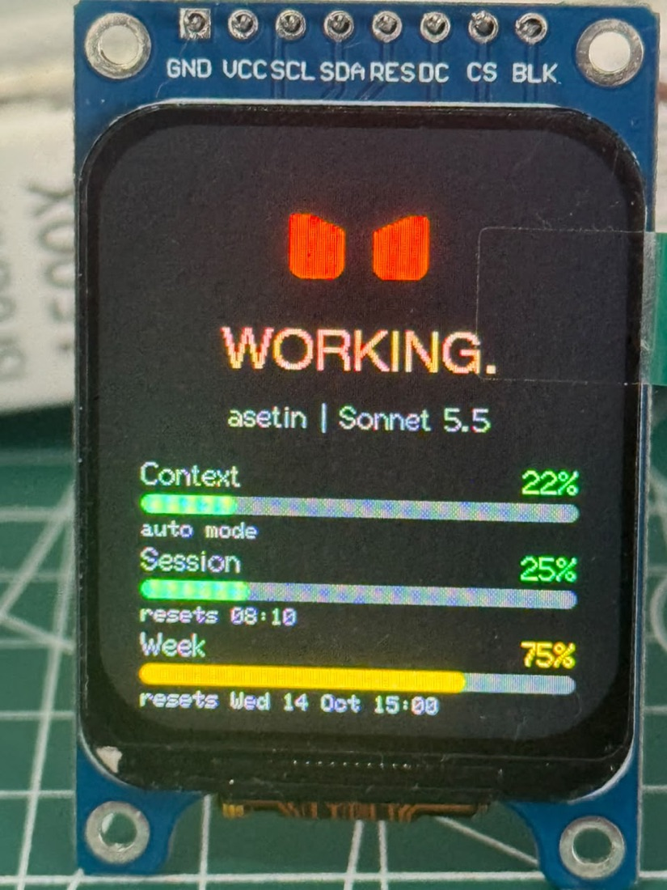
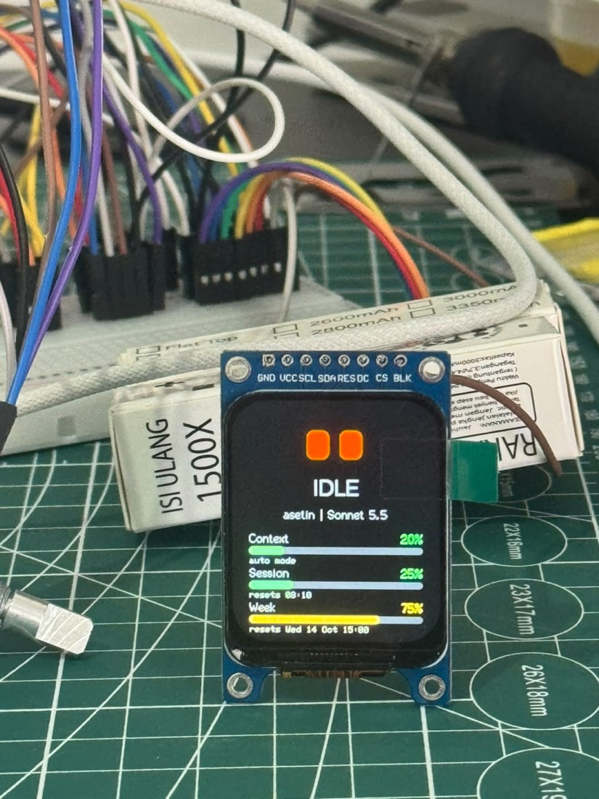
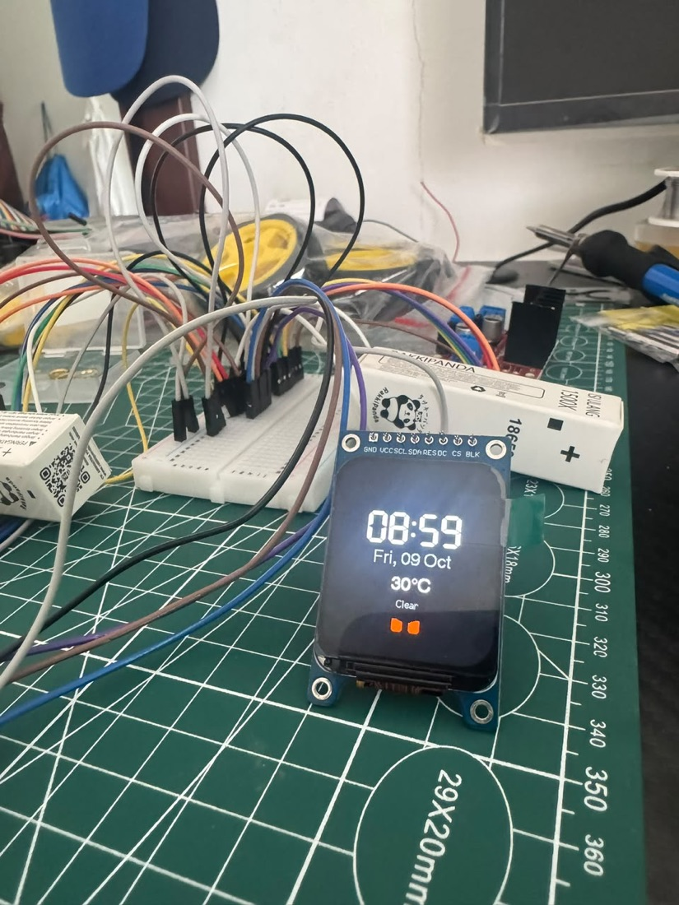
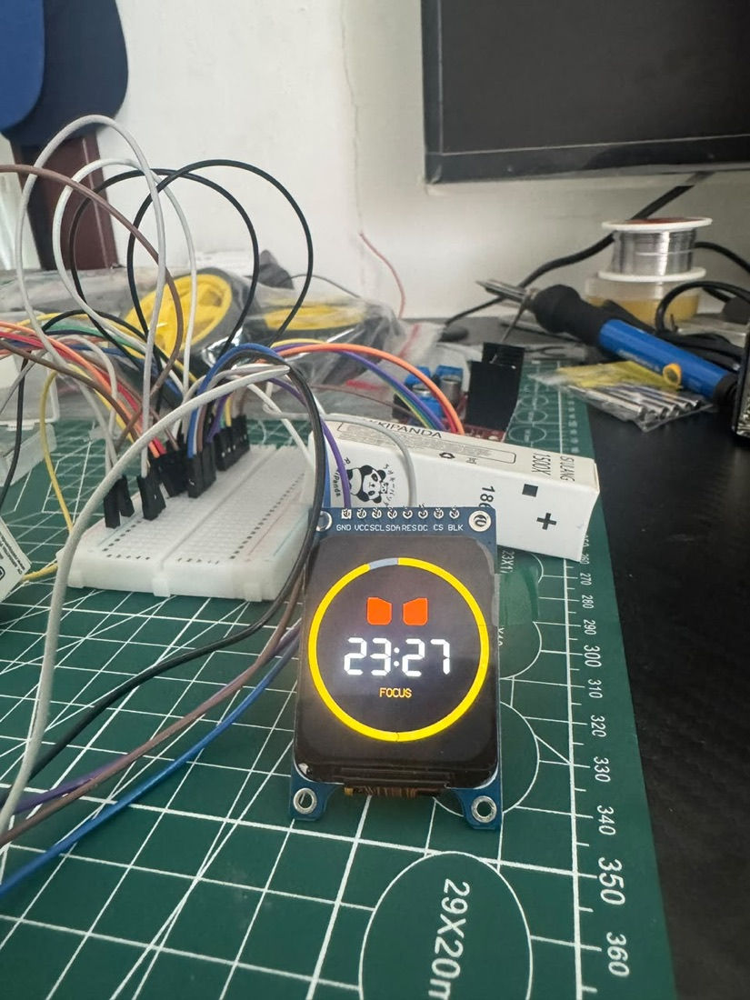

Teman kecil di meja: wajah yang berkedip dan senang dielus, focus timer, jam & cuaca, dan monitor Claude Code.

Layar 1.69" dengan wajah robot yang hidup. Tahan knob untuk pindah mode.



Harga perkiraan Shopee (Oktober 2026). Kata kunci bisa langsung dicari di Shopee.
| Komponen | Kata kunci | Harga | Catatan |
|---|---|---|---|
| ESP32-S3 N16R8 DevKitC (2 port USB-C) | esp32 s3 n16r8 | Rp85–110rb | Harus N16R8 (flash 16MB, PSRAM 8MB) |
| LCD 1.69" ST7789 240x280 SPI | lcd 1.69 st7789 | Rp40–55rb | Yang ada pin BLK |
| Rotary encoder KY-040 | ky-040 rotary encoder | Rp6–10rb | Knob putar + tekan |
| Buzzer pasif KY-006 | ky-006 buzzer pasif | Rp4–7rb | Modul 3 pin: S, +, − |
| Breadboard 400 lubang | breadboard 400 | Rp8–12rb | Atau mini breadboard |
| Kabel jumper female-male (20 pcs) | kabel jumper female male | Rp8–12rb | Sinyal ke pin ESP32 |
| Kabel jumper male-male (20 pcs) | kabel jumper male male | Rp8–12rb | Ke jalur power breadboard |
| Kabel USB-C data | kabel usb c data | Rp15–25rb | Bukan kabel cas saja |
| Copper tape (opsional) | copper tape | Rp10–15rb | Pad sentuh untuk dielus |
| Total perkiraan | Rp185–260rb |
Laptop/PC dengan Google Chrome atau Microsoft Edge (untuk install firmware). Tidak perlu solder untuk versi breadboard ini. Opsional: solder untuk header LCD supaya kontaknya awet.
Semua sinyal ke header kiri ESP32-S3. Listrik dibagi lewat jalur breadboard: pin 3V3 ke jalur +, pin G ke jalur −.
| Modul | Pin modul | Sambung ke |
|---|---|---|
| LCD 1.69" ST7789 | BLK | GPIO 9 |
| LCD 1.69" ST7789 | CS | GPIO 10 |
| LCD 1.69" ST7789 | DC | GPIO 11 |
| LCD 1.69" ST7789 | RES | GPIO 12 |
| LCD 1.69" ST7789 | SDA | GPIO 13 |
| LCD 1.69" ST7789 | SCL | GPIO 14 |
| LCD 1.69" ST7789 | VCC | 3V3 (jalur + breadboard) |
| LCD 1.69" ST7789 | GND | GND (jalur − breadboard) |
| Knob KY-040 | CLK | GPIO 4 |
| Knob KY-040 | DT | GPIO 5 |
| Knob KY-040 | SW | GPIO 6 |
| Knob KY-040 | + | 3V3 (jalur + breadboard) |
| Knob KY-040 | GND | GND (jalur − breadboard) |
| Buzzer KY-006 | S | GPIO 15 |
| Buzzer KY-006 | + (tengah) | 3V3 (jalur + breadboard) |
| Buzzer KY-006 | − | GND (jalur − breadboard) |
| Touch pad | kabel / copper tape | GPIO 7 |
Tanpa install software. Buka di laptop (Chrome atau Edge):
https://julisman.github.io/desk-buddy/
Mau ubah kode? Source code lengkap ada di https://github.com/julisman/desk-buddy (PlatformIO).
Tahan knob (± 1 detik) untuk ganti mode. Elus pad sentuh kapan saja: wajah senang, keluar hati, bunyi "purr".
Tidak disentuh 5 menit (malam 23:00–07:00: 1 menit): Desk Buddy tidur dan layar redup. Sentuh knob untuk membangunkan.
Desk Buddy menampilkan model, context %, limit sesi (5 jam) dan mingguan beserta jam reset, dan status: WORKING, NEEDS YOU (alarm + bingkai merah saat Claude minta izin), DONE. Bisa memantau sampai 4 sesi sekaligus.
Yang dikirim ke Desk Buddy cuma angka dan status. Prompt dan balasan Claude tidak pernah keluar dari laptop.
| Gejala | Solusi |
|---|---|
| Layar menyala tapi abu-abu / putih polos | Kabel data LCD (SDA, SCL, CS, DC, RES) tidak nempel. Tancap ulang, miringkan sedikit header LCD di breadboard, tahan pakai selotip, tekan RST. Solder header LCD = solusi permanen. |
| Layar mati total | VCC LCD harus ke 3V3, bukan 5V (pin 5V tidak ada listrik saat colok USB native). |
| Board restart terus saat bunyi | Cek kabel buzzer: S ke GPIO 15, + ke 3V3, − ke GND. Firmware sudah memakai volume kecil supaya aman. |
| Port tidak muncul saat install | Ganti kabel USB-C (banyak yang cuma untuk cas). Coba port USB yang satunya. Atau tahan BOOT, tekan RST, lepas BOOT. |
| Knob kebalik / loncat 2 | Tukar kabel CLK dan DT. Kalau 1 klik = 2 langkah, beri tahu kami (setting firmware). |
| Jam / cuaca tidak muncul | WiFi belum tersambung. Tahan knob sambil menyalakan untuk setup ulang WiFi. |
| Elus tidak terasa | Jangan sentuh pad saat Desk Buddy menyala (kalibrasi). Pakai kabel pendek dan pad lebih lebar (copper tape 2x2 cm). |
Phase 2: baterai LiPo + charger Type-C (bisa dibawa ke mana-mana, ikon baterai) dan suara: ngobrol dengan Desk Buddy lewat mic dan speaker, dijawab AI dari laptop kamu.